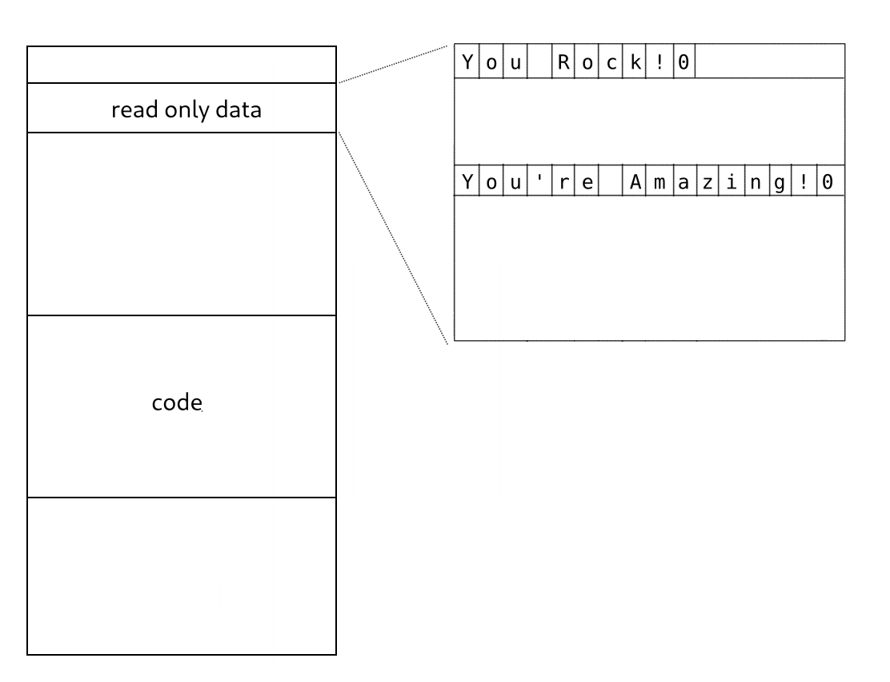
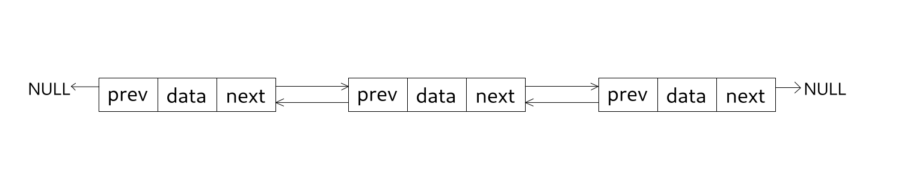
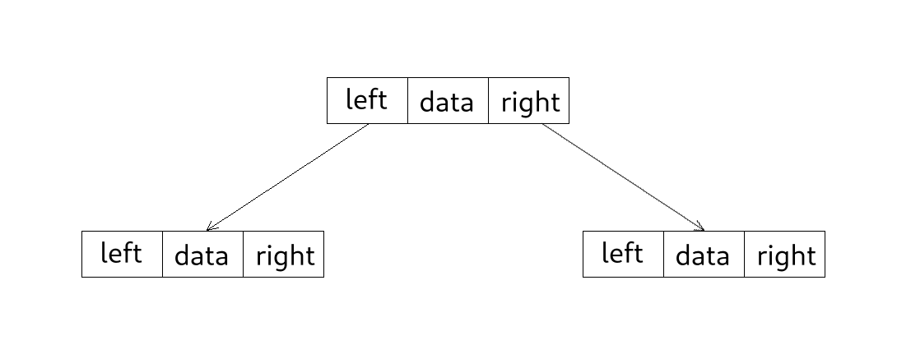

At a fundamental level a pointer is just a number which represents a memory address. The size of a pointer depends on the platform, for 64 bit platforms the size is 64 bits (8 bytes) and for 32 bit platforms the size is 32 bits (4 bytes), but the size is always the same for a given platform regardless of the pointer’s type.
printf("%d\n", sizeof(int*));
printf("%d\n", sizeof(char*));
printf("%d\n", sizeof(void*));
printf("%d\n", sizeof(MyCustomType*));
A memory address specifies the location of a single byte in memory, if we wanted to read only a single bit from memory, we would have to read a whole byte and then do some bit twiddling to extract the bit we were interested in.
1. Modify another variable’s value
The most basic usage of pointers is to modify the value of the variable they are pointing to. The address-of operator & is used to get the memory address of a variable, which we can then assign to a variable of type pointer. Once we have a pointer initialized we can read or modify the variable we are pointing to by using the derreference operator *.
int foo = 10;
int *ptr = &foo; // Get the address of foo and store it in the pointer ptr.
*ptr = 20; // Modify the value pointed to by ptr (foo).
printf("foo: %d\n", foo);
2. Calling “by pointer”
We can achieve the same result as before but in a function by passing the argument “by pointer”:
void my_func(int *ptr) {
*ptr = 20;
}
int main() {
int foo = 10;
my_func(&foo);
printf("foo: %d\n, foo);
}
In this simple example, it might not be clear which are the benefits of passing foo by pointer instead of just returning the value 20 directly and assigning it to foo like this:
int my_func() {
return 20;
}
int main() {
int foo = 10;
foo = my_func();
printf("foo: %d\n", foo);
}
But whereas you can only return a single value, you can have multiple parameters of type pointer. So, this method is useful when you want to have multiple return values.
3. String literals
Pointers are also very commonly used to store the address of string literals.
char *message = "You Rock!";
These literals are typically stored in a read-only section of the executable binary, therefore the content of these literals cannot be modified.
// message[0] = 'y'; // This produces an error at runtime!
The pointer value that we get back when creating a string literal always refers to the memory address of the first character, and the string literal is always null terminated.
#include <stdio.h>
int main() {
char *message = "You Rock!";
printf("The first character is: '%c' which is the same as '%c'\n",
message[0], *message);
printf("The literal \"%s\" is located at address: 0x%08X\n",
message, message);
message = "You're amazing!";
printf("The literal \"%s\" is located at address: 0x%08X\n",
message, message);
printf("The string ends with %d\n", *(message + 15));
}

4. Allocating memory
Another usage is to store a pointer to a block of allocated memory. The C standard library stdlib.h provides the malloc function which takes a size in bytes and returns a pointer to the start of a block of memory with the size we specified on success, or a NULL pointer on failure.
char *buffer = (char*)malloc(1024); // allocate a block of 1024 bytes
Usually, the operating system provides its own set of functions to allocate memory, which give the user more control over how the allocation is done.
On Windows, we have the function VirtualAlloc which allows us to specify, among other things, which permissions do we want for the allocated memory, do we want write only memory or we also want to have execute access.
On Linux, the function mmap is used to map a file into memory, but the same function can be used to allocate memory by setting the flag MAP_ANONYMOUS.
5. Arrays
In C, arrays are just a contiguous region of memory with enough size to fit the elements we specify. The compiler implicitly keeps information about the size of an array, and we also know the size of a single element in the array. Therefore, we can compute the number of elements by dividing these two values.
int numbers[] = {1, 2, 3, 4, 5, 6, 7, 8, 9, 10};
printf("sizeof(numbers): %d\n", sizeof(numbers)); // sizeof(int) * 10
int count = sizeof(numbers) / sizeof(numbers[0]); // 10
There is a catch though, when we pass the array as an argument to a function that information is lost. In fact, the function declarations void foo(int arr[]); and void foo(int *arr); are equivalent.
void print_size(int arr[]) {
// Warning on most compilers. Prints the same as sizeof(int*)
printf("sizeof(arr): %d\n", sizeof(arr));
}
int main() {
int numbers[] = {1, 2, 3, 4, 5, 6, 7, 8, 9, 10};
print_size(numbers); // numbers is passed as if it was an int*
}
Since the array size information is lost when calling other functions, it is very common to have an extra function parameter that specifies how many elements are in the array.
void print_array(int arr[], int count) {
for (int i = 0; i < count; i++) {
printf("%d\n", arr[i]);
}
}
The parameters argc and argv in the main function is another example of this. In this case, the type of each element in the array argv is char *, which is itself a null-terminated array of characters.
int main(int argc, char **argv) {
for (int i = 0; i < argc; i++) {
printf("argument[%d]: %s\n", i, argv[i]);
}
}
6. Data structures
Pointers are also fundamental to many data structures such as Single and Doubly Linked Lists or Trees. The discussion of these data structures is out of the scope of this post, but we will show how some of this structures could be defined using pointers.
typedef struct {
ListNode *prev;
ListNode *next;
// Any additional data
} ListNode;

typedef struct {
TreeNode *left;
TreeNode *right;
// Any additional data
} TreeNode;

7. Function pointers
Just as variables have an address where their value is stored, functions also have an address, in this case though, it’s the address where the executable code of the function is located. We can get the address of a function just by its name, we don’t need to use the & operator.
int sum(int a, int b) {
return a + b;
}
int main() {
printf("The address of sum is 0x%08X\n", sum);
}
The syntax for specifying the type of function pointers is a bit tricky, but you can always look it up or use cdecl.org. In our case the type would be int (*fptr_name)(int, int). And once, we have a pointer to the function, we cani just call it like if it was a regular function.
int sum(int a, int b) {/*...*/}
int main() {
int (*sum_fptr)(int, int) = sum;
printf("1 + 2 = %d\n", sum_fptr(1, 2));
}
8. Opaque types
This last usage is often used by libraries as a way to keep implementation details hidden from the users of the library. More specifically, what is hidden from the users is the definition of internal structs within the library. That way, the mantainers of the library can change the internal definition of the structs without affecting the users.
Let’s imagine that we were the authors of a library for creating a window. We could define a simple API for the library in the header file window.h like this:
// window.h
typedef struct Window Window;
Window *create(int width, int height);
void show(Window *window);
void destroy(Window *window);
In the first line, we declare an incomplete type Window. This allows us, to use this type without knowing the actual structure layout, as long as we use it as a pointer. And the compiler know, that the actual definition of the struct will come later. Following the declaration of Window we have the prototypes of 3 functions for creating, showing and destroying a window. Notice how all of these methods either return a pointer to Window or take a parameter of type pointer to Window.
Users can start using the library, and they cannot see which fields there are inside of a Window. That is a good thing, because if the authors of the library ever decided to release a new version changing the internals of the Window struct, the user’s code should still compile without changes.
// main.c
#include "window.h"
int main() {
Window *window = create(800, 600);
show(window);
destroy(window);
}
The internal implementation of the library could look something like this:
// window.c
#include "window.h"
#include <stdio.h>
typedef struct Window {
int handle; // Fields private to this file
} Window;
Window *create(int width, int height) {
Window *window = (Window*)malloc(sizeof(Window));
window->handle = 123; // Simulate that we created a window handle
return window;
}
void show(Window *window) {
printf("Showing the window\n");
}
void destroy(Window *window) {
if (window) {
free(window);
}
}
The same concept can be applied to cross platform code. In this case we could have one implementation file for every supported platform, for example win32_window.c and linux_window.c and the actual definition of the Window struct could be different.
Conclusion
We have seen that the concept of pointers is very simple at a fundamental level. However, there are many ways they can be used which is why sometimes it can get confusing. Figuring out which of the use cases presented in this post is being used at any point can help you avoid the confusion.